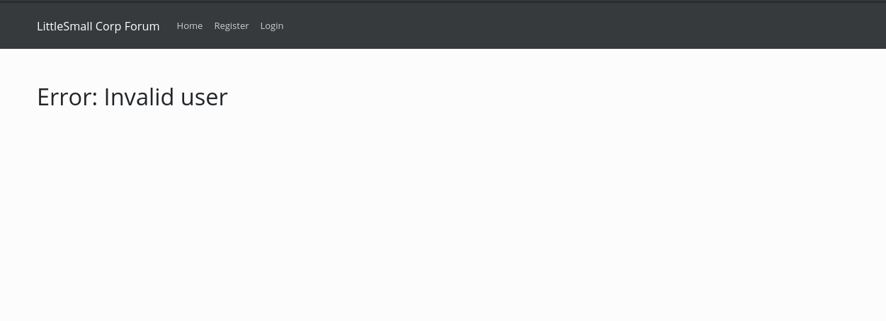

Joy With Tokens
Category: webWe’re trying out some fancy new security technologies on our new site! We’re excited to prove just how effective they are at keeping hackers like you out. Just to show you how secure we are, we invite you to try to take over the admin account. We’ll even give you the admin’s email: admin@joywithtokens.metaproblems.com. Good luck! You’ll need it!
Poking Around
We’re given a site with the following features, once everything is explored:
- Login
- Register
- Log out
- Forgot Password
- View Profile
- Edit Profile
I hadn’t done anything with JWT (JSON Web Tokens) before, so this was a really interesting challenge. To give a more realistic impression of how I solved this challenge, I’ll go through all the steps that didn’t work as well.
Exploring the web app, there was an “Upload Profile Picture” that initially smelled like LFI or PHP shell upload, but that wasn’t it. It was at this point that the challenge name clicked (Joy With Tokens… JWT… duh). But, I didn’t see any tokens issued to me.
After a bit of poking around (and being logged in and out seemingly at random), I found that login.php/register.php/etc were being hit via AJAX, and the response (pseudo-HTTP status code responses) were being parsed in client-side JS. So I hit the endpoint manually from the command line, thinking that maybe there was an unused JWT issued there that I could abuse for some info, but there wasn’t, that’s just how the app works.
Getting Token
So I poke around, click all the buttons, and see nothing. I’m absolutely lost and have no idea where the sneaky webapp is hiding the magic tokens… Asking the admins for a nudge, they reply:
Have you tried requesting a password reset?
I mean, of course I did, I’m a professional web button clicker. Turns out you need to give the web application a real email, because the password reset actually sends you an email… Maybe I’m stupid but I didn’t expect that, usually challenges say if you need a real email. Anyhow…
Token acquired! :sunglasses:
http://host1.metaproblems.com:4200/reset.php?i=eyJqa3UiOiIuXC9rZXlzLmpzb24iLCJ0eXAiOiJKV1QiLCJhbGc....4A8PpDNrUYkE9chO4I3wVwh_4cEx1QGenerating Payload
Looking at this in JWT.io, we see a few interesting things, namely that the JKU is referenced by a relative path, and…
JKU is a path to grab keys from in order to verify the signature of the JWT. They’re publicly accessible.
So, at first glance this might look juicy, but these are just public keys and we can’t really do anything with them. But, from this point on, it should become pretty clear what we need to do:
- Generate our own private key to sign the (forged) admin token with a different JKU
- Host the public keys at the path specified by the JKU so the webapp things we’re legit
- etc etc profit
We can do this manually, but jwt_tool.py is pretty nice and does everything for you.

Exploitation
Cool! Now I just host coolkeys.json on my external web server, pass the above key to reset.php, the server fetches it, and we’re rolling in flags!

Hey, where’s my juice? :(
So, checking the access logs on the server, it never actually fetched it. So, does it have to be local? That would make sense since the other one was ./keys.json. But how do we get keys locally on the server? Oh right, the profile upload. But, trying to upload coolkeys.json results in the error “PNG pictures only”, so…
Alright, cyber achieved:
We change the jku to be the local path to the profile image, change the admin token email, and sign it with our private key, and then send it off. It doesn’t work the first time, so I rage-refresh, and it works!
I think the application was load-balanced, but the db data was not duplicated across instances– which would explain why I was being logged in/logged out all the time, and why I had to refresh like five times for the flag to work. This might’ve been intentional, given how it said I would need luck in the description. Anyhow, neat challenge!